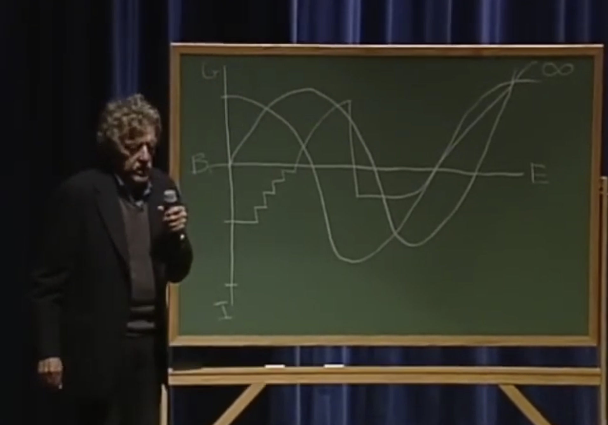

A passion project by Derin Savasan
Every screenplay is a line that rises and falls. This is what 1,627 Hollywood films look like when you plot their feelings from first page to last.

Kurt Vonnegut spent the second half of his life lecturing on an idea from the first.
Every story ever written, he said, has a shape. We follow a character moving between good fortune and ill fortune, from the beginning to the end of a story.
He named a few of these shapes and drew them on chalkboards in lecture halls across the US. The 2004 version is one of the few that survived on tape.
Vonnegut’s idea was originally for books, not films.
Computers, he said, could probably find the rest.
He didn’t live to do it. But analysis methods got cheap, screenplay archives went online, and his question turned into something a laptop could answer in an afternoon.
So I picked up where he left off and asked his question for Hollywood.
How many shapes are in Hollywood? And what do these shapes look like?
warm up
A single screenplay, page one to the end, plotted as the emotional pulse of its writing. A sentiment model reads it in twenty chunks and scores each one. The line rises with joy and falls with sorrow.
Peaks are …’s emotional highs. Valleys are its emotional lows. Keep scrolling, and hover over either to watch the scene.
Each dot is a turning point where the story visibly changes its mind. A great screenplay doesn’t need many of them, but it does need the right ones.
zoom out
Every screenplay on Script Slug from 1980 to today. Same process, same grid. Vonnegut said a computer could find the common shapes. So I gave it a go with machine learning.
the answer
Six shapes came back for 1,627 screenplays. They line up with the ones Vonnegut drew, give or take.
He named them. Click one to see what inspired their name.
one by one
The bold line is the average across hundreds of screenplays. The faint lines are the twenty films that hug the average closest. Same shape, different stories.
1 of 6
across time
Five decades of film, six shapes ranked by popularity in each one. The lines track each shape’s standing across the years. Watch where they hold and where they cross.
the standings
For four straight decades, Man in a Hole sat at the top. Then the 2020s arrived, and Tragedy took over.
Stories about climbing out of a hole made way for stories that don’t climb out at all.
and yet
Data suggests it could be for a few reasons.
The feeling is real. It just doesn’t come from where most people would point.
The deep machinery has held. The median film still contains about ten turning points, and that number sits within a single standard deviation across every decade from the 1980s onward. Closure strength has not moved either: decade means cluster between 0.60 and 0.65, and the share of films ending above their own emotional baseline stays between 75 and 80 percent across forty-five years. The big six arc shapes still describe the corpus, and a chi-square test on dominant archetype by era returns p = 0.36. By those measures, nothing happened. The count of turns, the shape of the landing, the inventory of available story shapes — all stable.
The shift sits in two places.
Films pull harder on Icarus and Tragedy now, and less on Rags to Riches. The redemptive arc loses about a fifth of its average mixture weight across the corpus. Icarus gains roughly an eighth. In the 2020s, Tragedy overtakes Man in a Hole as the largest mixture component for the first time in the dataset. Man in a Hole had led every previous decade. None of these movements would survive a stringent statistical correction on its own. They are modest. But they are directional, they are consistent, and they all point the same way: away from stories that finish in the light, toward stories that peak early or end unresolved.
Dialogue density climbs from 88.5% in the 1980s to 92.3% in the 2010s, then pulls back slightly in the 2020s. The more interesting move is in the spread, not the median. The 1980s had genuine outliers: scripts that were almost all action description, scripts that were almost all people talking. By the 2010s those outliers are gone. Scripts have become more verbal and more like each other.
So the answer to why do movies feel different is not that they have more twists, or weirder endings, or a structure unrecognisable to their predecessors. The number of turns is the same. The way stories land is the same. What has shifted is the weight the average film places on darker shapes, and the verbal texture of how stories get told. The shapes did not break. They bent. And the talking flattened out.
your turn
Twenty-four films, curated from the corpus. Click a title to draw its arc. Search across all 1,627 to bring in any film. Toggle the turning points to see the moments where the story changes its mind.
Storylines are eternal.
1,627 screenplays · Movie Script Database · arcs over 20 normalized positions · k-means, k = 6 · typography Fraunces, Source Serif 4, Inter, JetBrains Mono.